Theme Installation → Theme Installation
Download packages
Purchase Oworganic theme from ThemeForest then you can download our template package on there.
Extract package that include all files and folders of theme. When done, you should see oworganic_theme.zip (zip file name can be changed from version to version).
System Requirements
When selecting a hosting service, you should check to see that these server requirements are provided and installed on their web servers:
- PHP version 5.6 or greater
- MySQL version 5.6 or greater
- Recommended memory_limit is no less than 64M
- Upload_max_filesize should be no less than 20M
Theme Installation
- Step 1: Navigate to Appearance → Themes in your WordPress admin dashboard.

- Step 2: Click the Add New button at the top of the page and go for the Upload option.

- Step 3: Choose oworganic_theme.zip then click Install
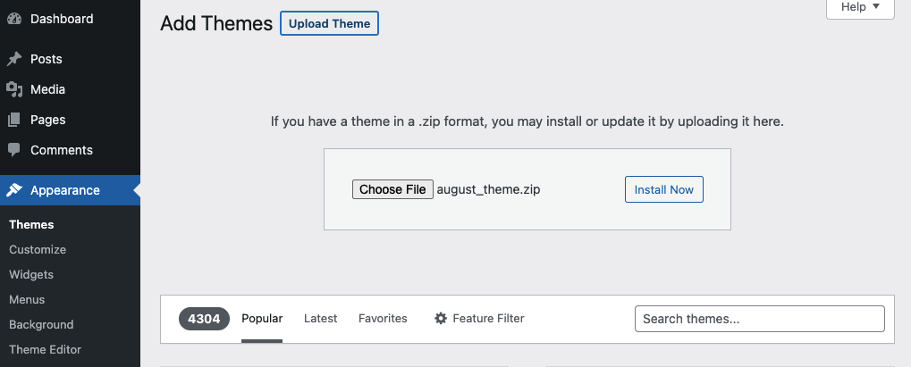
- Step 4: Wait while the theme is uploaded and installed then activate the theme.
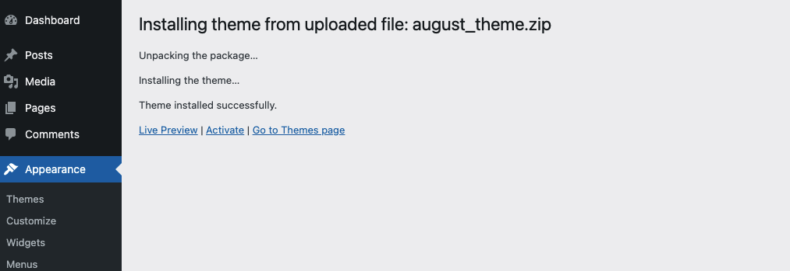
Known problems when installing the theme
a. The “Broken theme and/or stylesheets missing” error is most common when you install or activate a new theme.
If you get an error saying that the stylesheet is missing, then you have uploaded the wrong folder. Please check that you are uploading the oworganic_theme.zip within the Theme Files folder. You have to unzip the package file that you download from Themeforest to find this.
b. Problems with uploading via WP admin panel due Upload limit.
You may check your file upload limit on Your Media Uploader page in WordPress. Depending upon the web hosting company and the conditions of the service they provide it may vary. The most common is about 8 MB which is more or less enough. But uploading some media files like audio and video may become a problem with for example 2 MB upload limit.
We decided to share some tips about how to extend your maximum file upload size in WordPress:
1. Through functions.php file:
You may add the below mentioned code in the functions.php file of your theme
@ini_set( 'upload_max_size' , '64M' );
@ini_set( 'post_max_size', '64M');
@ini_set( 'max_execution_time', '300' );
2. Through PHP.INI file:
If you cannot see the php.ini file in your directory create the new one with below mentioned code and upload it to your root folder on your web server.
If you can see the php.ini file then change parameters or add :
upload_max_filesize = 64M
post_max_size = 64M
max_execution_time = 300
In case that tip does not work with 64MB, try it with 10MB.
3. Through .htaccess method
You may try modifying the existing .htaccess file in the root directory or creating a new one.
Add the following code in the existing or new .htacess file:
php_value upload_max_filesize 64M
php_value post_max_size 64M
php_value max_execution_time 300
php_value max_input_time 300
You can reset all of the setting for the each page on our custom panel by clicking “Reset” button on the bottom.
Theme Installation → Plugins Installation
Right after the theme was activated, a notification at the top of the screen will suggest to continue with the installation of the plugins recommended for getting the best our of your theme.
Follow the installation steps below:
Step 1. Click ‘Begin installing plugins‘ and select the plugins you need to install from the list.
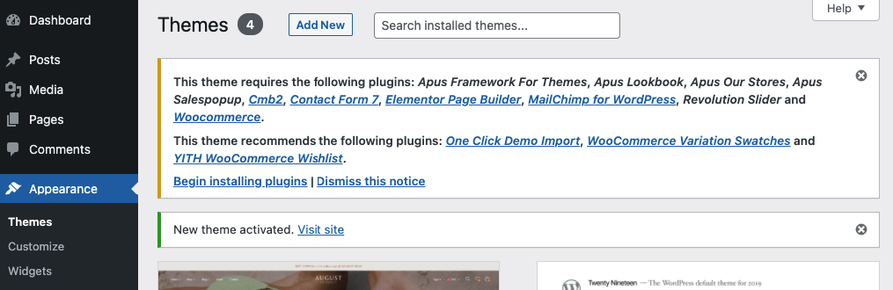
Step 2: Select all plugins then choose Install , Click Apply to install all plugins
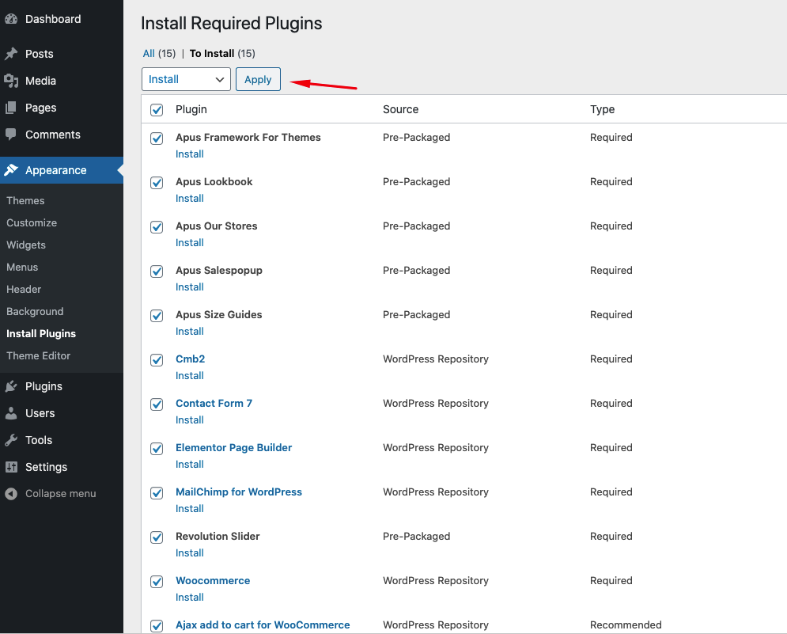
Plugins Using in Oworganic theme
- Apus Framework for themes: Implement rick functions for themes base on apus framework and load widgets for theme used.
- Cmb2 : Create custom meta boxes and custom fields for any post type in WordPress.
- Contact Form 7: Allow you create contact forms on Contact Page.
- Elementor: powerful Elementor to create page layout
- MailChimp for WordPress: to use newsletter function
- Revolution Slider: premium responsive slider.
- WooCommerce: The Shop engine for your WordPress site.
- WooCommerce Variation Swatches: Variation Swatches plugin
- YITH WooCommerce Wishlist: Wishlist plugin
- Ajax add to cart for WooCommerce: Ajax add to cart plugin
- Apus Lookbook: manager lookbook plugin
- Apus Salespopup: manager sales popup plugin
- Apus Our Stores: manager Our Stores plugin
- One Click Demo Import: Importing demo data plugin
Step 3: After Installing all Plugins, select Activate then click Apply to active all plugins.
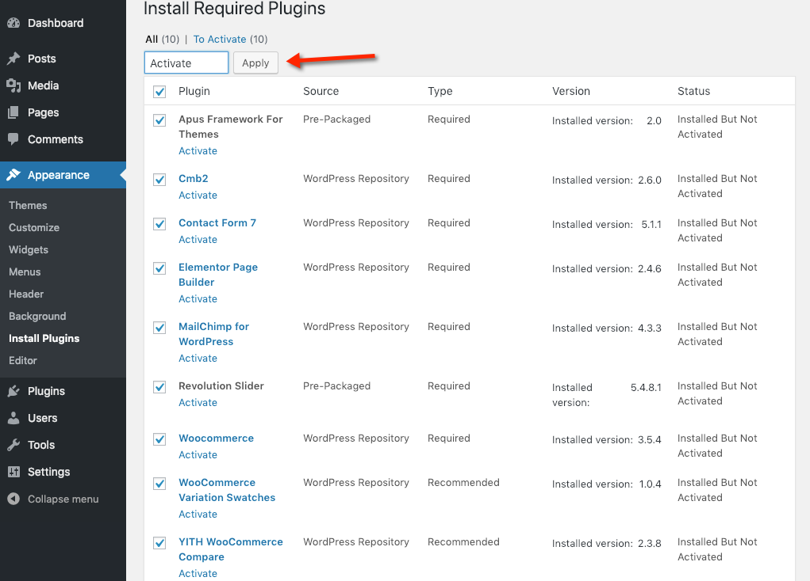
Theme Installation → Install Data Demo
Step 1: Navigate to Appearance → Import Demo Data
Step 2: Click on Import Demo Data.
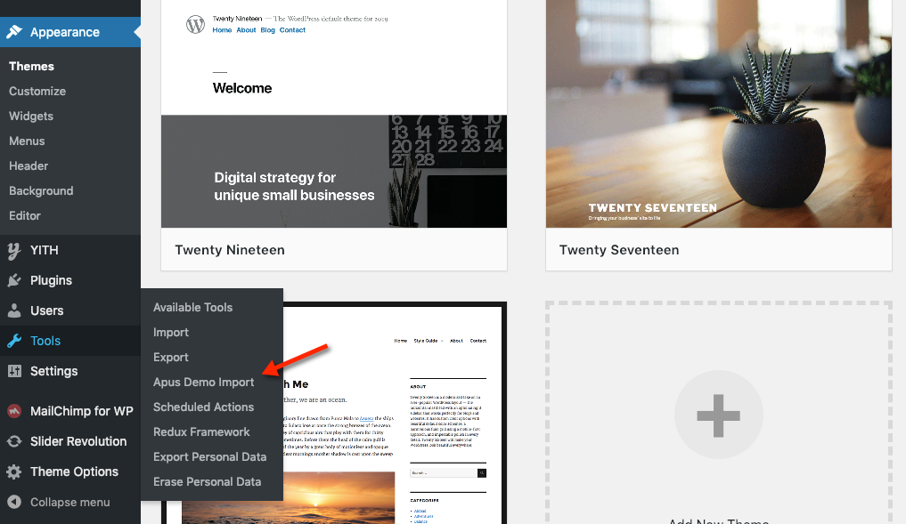
Theme Configuration → Page
You can quickly build a home page using Elementor for WordPress that is drag and drop frontend and backend page builder plugin that will save you tons of time working on the site content. You will be able to take full control over your WordPress site, build any layout you can imagine – no programming knowledge required
From your Dashboard admin Navigate to Pages
- Select All Pages to see all pages then click edit one page you want
- Select Add New to create new page
A. How to use Elementor
Have you ever used Elementor ? Please follow that guide first : Elementor guide
Official Plugin Documentation For More information about the Elementor check the official documentation.
Watch video about Elementor
a. Add and modify Row Layout
Step 1 - Go to your page / post, first activate the backend editor and click Edit with Elementor
Step 2 - You will see all element in left sidebar, please choose element that you want to use.
or you will see button "Add New Section" ,"Add Template" , please click to button to add element.
Step 3 - To change the Row layout ( number of columns ) you need to click button content will display in leftsidebar.
b. Edit Element
Click on the Edit This Element (pencil icon) to Edit the Row element , when you click to button all content will display in left sidebar follow you can change .
c. Remove Element
Trash Box Icon - To Remove Row, Column or Module you need to click the Trash Box icon.
d. Add Element
Trash Box Icon - To Add Row, Column , please click to add icon.
B. Page Options
a. Page Attributes
You can select page attributes on right sidebar of page admin layout. Each Page templates have each styles

b. Page configure default template
For each page you can change the page layout, header layout, footer layout and much more! Check the screenshot and read the documentation to see how it works

- Select Layout - Select style for page to have a Auto, Left-Main Sidebar or Main-Right Sidebar.
- Enable Fullwidth Layout - Select if you want the page to have a Fullwidth layout.
- Header Layout - Select skin specific for Header on page or use Global
- Footer Layout - Select skin specific for Footer on page or use Globalsidebar.
- Disable Breadcrumbs - Select if you want to disable the subtitle and breadcrumbs.
- Breadcrumbs Text Color - Select color for text of breadcrumbs.
- Breadcrumbs Background Color - Select color background for breadcrumbs.
- Breadcrumbs Background - Select image to set background.
C. Set a page as Home Page
Step 1 - Go to Settings → Reading in your WordPress Dashboard panel.
Step 2 - Set "Front page displays" to a "Static Page".
Step 3 - In the drop down menu for "Front Page" choose a page which will be your home page.
Step 4 - Leave the drop down menu for "Posts page" empty, as this is not used by the theme.
Step 5 - Save changes.

Theme Configuration → Blog
1. Create the blog post
Step 1 - Log in to your WordPress Administration Panel (Dashboard)
Step 2 - Click the 'Posts' tab.
Step 3 - Click the 'Add New' sub-tab.
Step 4 - Start filling in the blanks: enter your post title in the upper field, and enter your post body content in the main post editing box below it.
Step 5 - As needed, select a category, add tags, post format, fill in the meta setings below the editor.
Step 6 - Upload a featured image for your Post.
Step 7 - Select Post Format. You can create blog post with a lot of Formats like link, gallery, image ..... Select format on Format box from in right sidebar
Step 8 - Scroll down until you see the Post Configuration box, there you will be able to customize the post.

Step 9 - When your post is ready, click Publish.
2. Manager current all blogs
Navigate to Posts → All Posts
You can see all informations of you blog post, add new, edit or delete them.

3. Setting a Page for Blog Page
Option 1. Create Blog Page with Visual Element
Step 1 - Log in to your WordPress Dashboard → Settings → Reading
Step 2 - Choose a page for Blog page.

Theme Configuration → Header
The theme is using Header Builder to build header layout
Step 1: Login to your WordPress admin panel, and navigate to Header Builder

Step 2: You can add new or edit available header
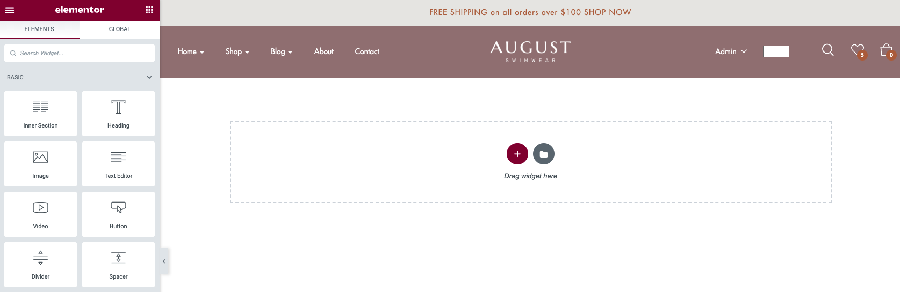
Step 3: Settings global header layout. Go to Theme Options → Header
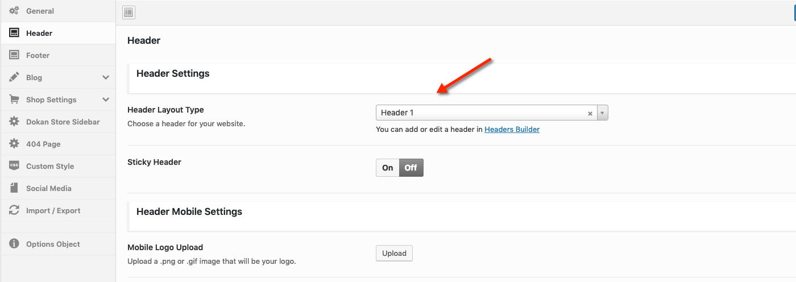
Step 4: Settings separate header for page. Go to Pages to edit page that you need set separate header

Theme Configuration → Footer
Step 1: Login to your WordPress admin panel, and navigate to Footer Builder

Step 2: You can add new or edit available footer
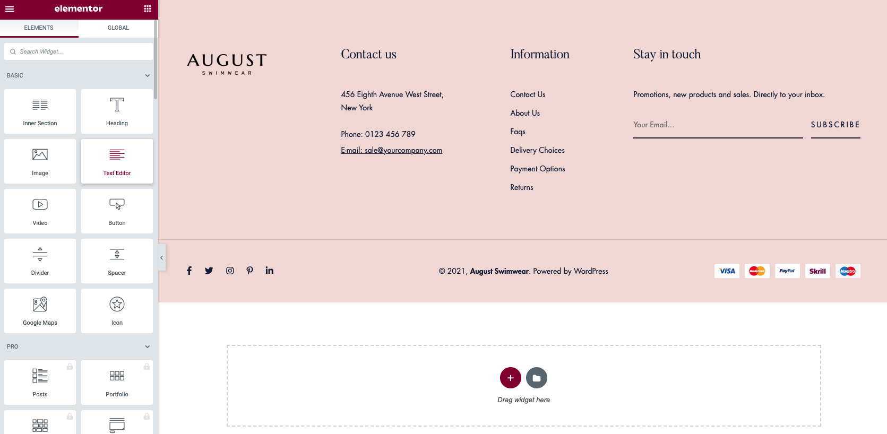
Step 3: Settings global footer layout. Go to Theme Options → Footer
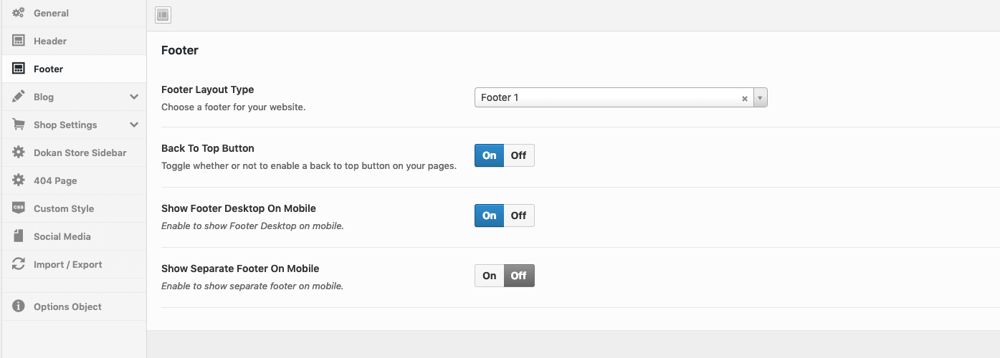
Step 4: Settings separate footer for page. Go to Pages to edit page that you need set separate footer

Theme Configuration → Menu
1. Creating your menu
Step 1- Login to the WordPress Dasrdoard.
Step 2- From the 'Appearance' menu on the left-hand side of the Dashboard, select the 'Menus' option to bring up the Menu Editor.

Step 3 - Select Create a new menu at the top of the page.
Step 4 - Enter a name for your new menu in the Menu Name box.
Step 5 - Click the Create Menu button. Your menu is now defined, and you can now add pages to it (steps below).
2. Adding pages to your menu
Step 1 - Locate the pane entitled Pages.
Step 2 - Within this pane, select the View All link to bring up a list of all the currently published Pages on your site.
Step 3 - Select the Pages that you want to add by clicking the check box next to each Page's title.
Step 4 - Click the Add to Menu button located at the bottom of this pane to add your selection(s) to the menu that you created in the previous step.
Step 5 - Click the Save Menu button once you've added all the menu items you want. Your custom menu has now been saved.

The Screen Options allow you to choose which items you can use to add to a menu. Certain items, like Posts or Products are hidden by default. The Screen Options are located in the top right corner of your WordPress Dashdoard.

3. Setup Megamenu
Step 1- Login to the WordPress Dasrdoard.
Step 2- navigate to Megamenu Profiles. to create a megamenu profile (using Elementor to build layout)
Step 3- From the 'Appearance' menu on the left-hand side of the Dashboard, select the 'Menus' option to bring up the Menu Editor.
Step 4- Add megamenu profile to menu item

4. Assigning a Menu to a Location
Once you've created a menu and filled it with items, it's time to assign it to one of the theme pre-defined locations.
- Go to Appearance → Menus and click Manage Locations.

Theme Options → General
Go to WordPress admin panel and navigate to Theme Options → General
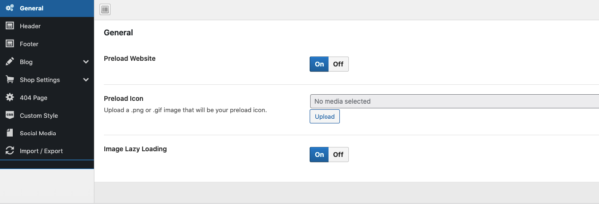
Theme Options → Header
Go to WordPress admin panel and navigate to Theme Options → Header
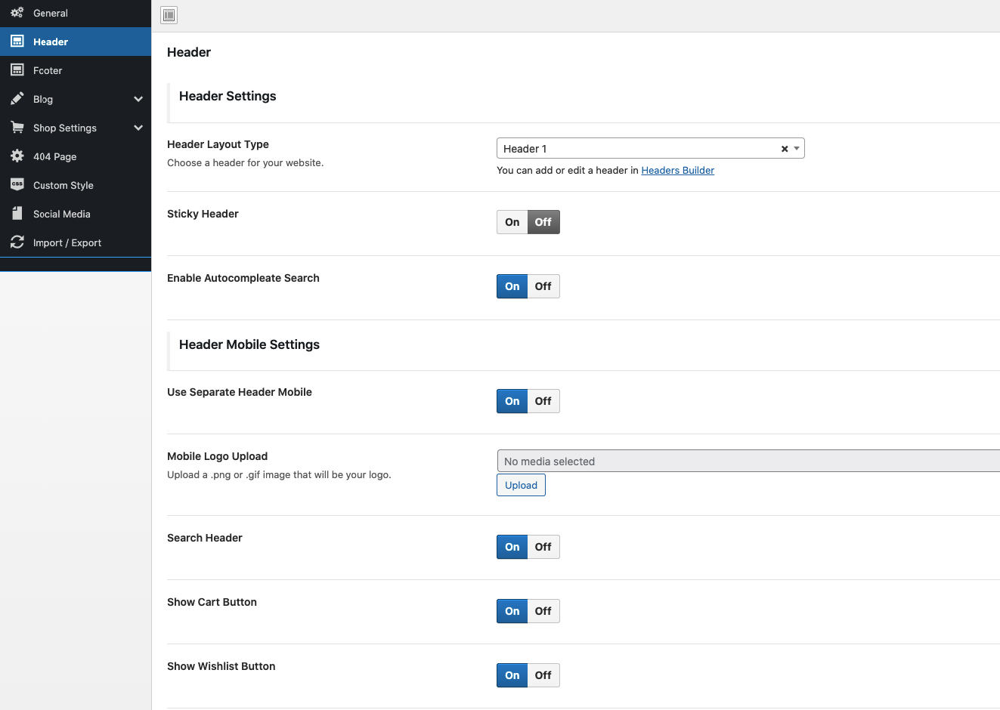
Theme Options → Blog
Go to WordPress admin panel and navigate to Theme Options → Blog
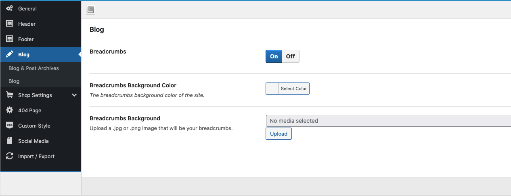
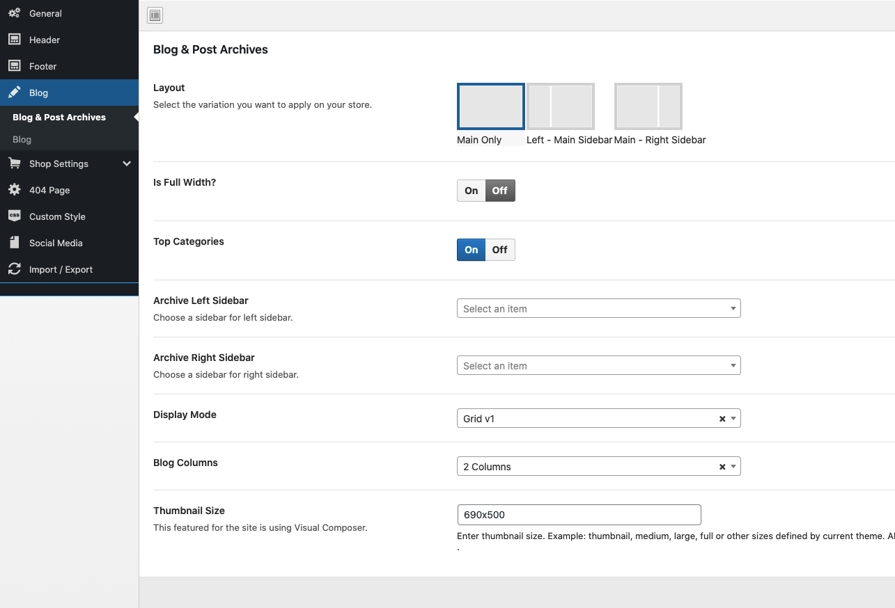
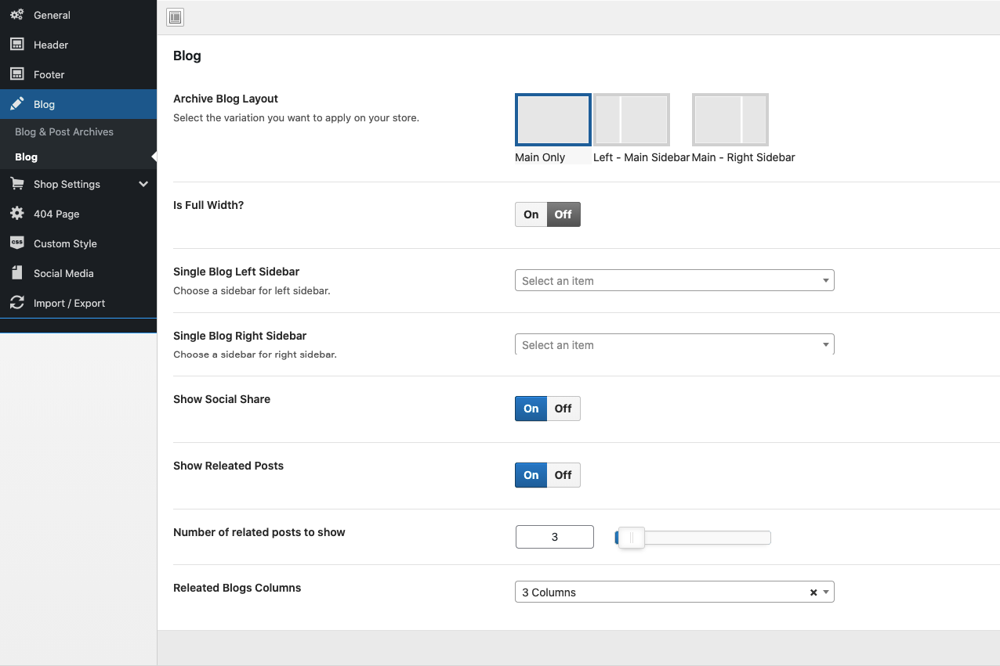
Theme Options → Shop
Go to WordPress admin panel and navigate to Theme Options → Shop Settings
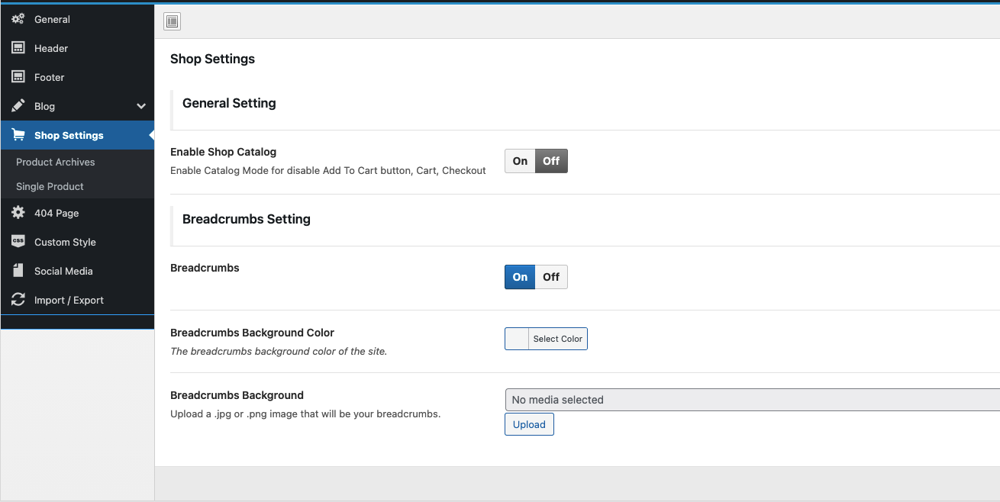
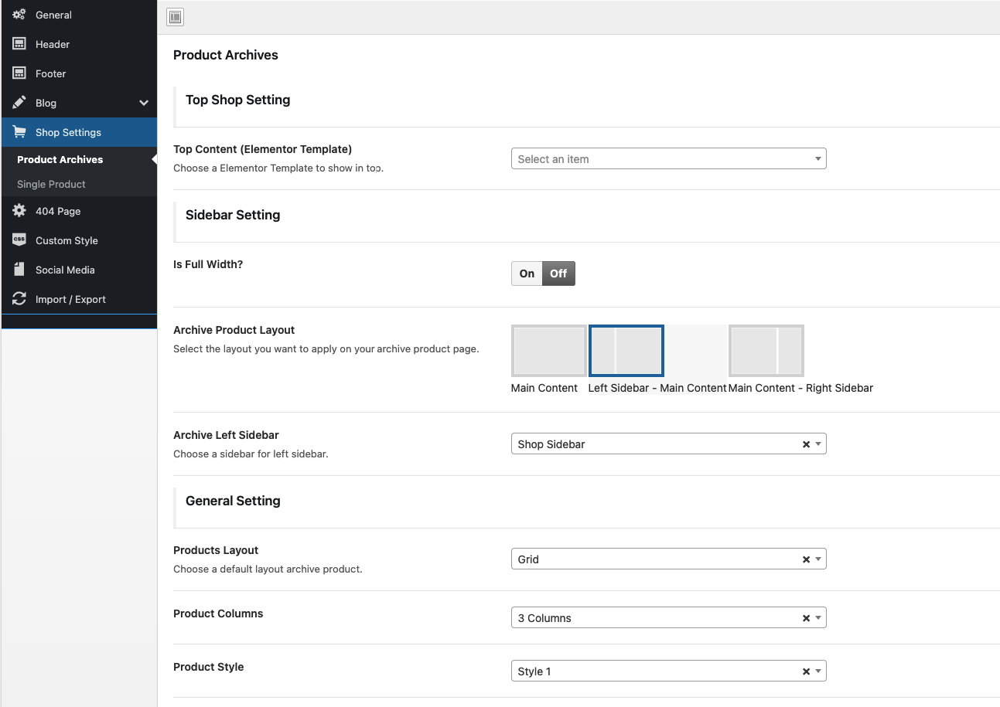
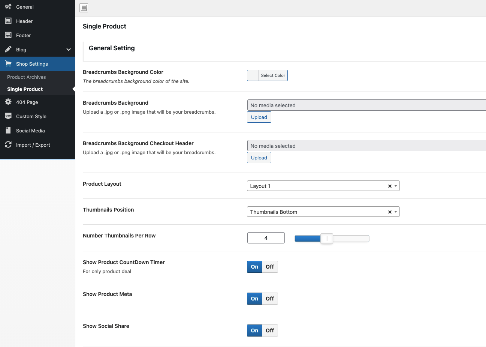
Theme Options → 404 Page
Go to WordPress admin panel and navigate to Theme Options → 404 Page
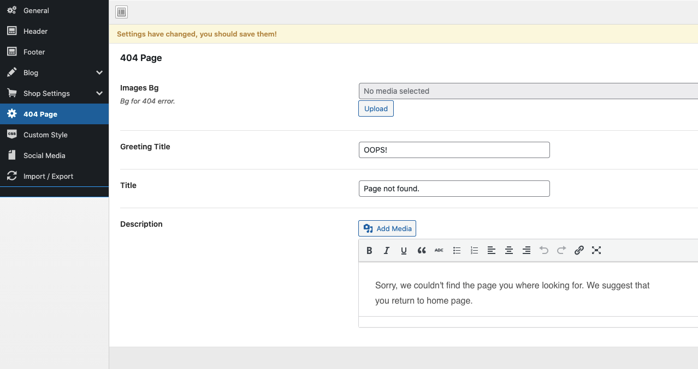
Theme Options → Style
Go to WordPress admin panel and navigate to Theme Options → Style
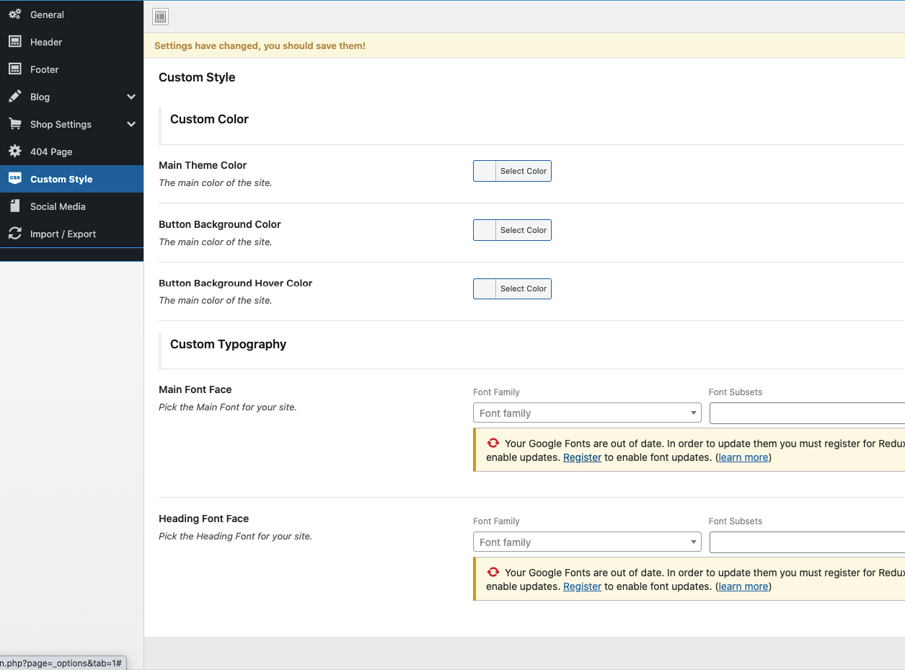
FAQs → How to translate the theme
The easiest way to translate theme to the language of your choice is to use "WPML" plugin.
- To begin, be sure you have the WPML Plugin installed and activated, along with the WPML String Translation plugin.
- To set up WPML the first time, follow their Getting Started Guide.To begin translating, select WPML (in the Dashboard menu) → String Translation. You should see a list of the strings in the theme (there should be only four), with blue translation links to the right. Click these links to reveal the list of languages you use on your blog and the associated translations.
- How to set and translate main features of the theme
- Using translation management http://wpml.org/documentation/translating-your-contents/using-the-translation-editor/
- Translation Management & Features – http://wpml.org/documentation/translating-your-contents/using-the-translation-editor/translation-management-features/
- Translating URL slugs – http://wpml.org/documentation/getting-started-guide/translating-page-slugs/
- How to scan strings coming from the theme
- http://wpml.org/documentation/getting-started-guide/theme-localization/
- How to translate strings using String Translation
- http://wpml.org/documentation/getting-started-guide/string-translation/
- If adjustment is needed for WPML language switcher please also add this
- http://wpml.org/documentation/getting-started-guide/language-setup/custom-language-switcher/
- If you need more help with WPML plugin. Please go WPML Forum
FAQs → How to update Theme
1. Update Theme via Envato Market plugin
Download and install Envato Market plugin here: https://envato.com/market-plugin/
2. Update Theme via WordPress
Updating the theme via WordPress is very similar to the install process via WordPress. Make sure you had backup all of your customization in our theme.
Follow the steps below to update your theme via WordPress:
Step 1 - Download latest theme package on ThemeForest
Step 2 - Log into your WordPress Dashboard.
Step 3 - Go to Appearance → Themes
Step 4 - Deactivate the Oworganic Theme by simply activating a different theme. Once you activate a different theme, you can delete the Oworganic theme.
Step 5 - Delete the Oworganic Theme. Do not worry, your content will not be lost!
Step 6 - Then simply upload the newest “oworganic_theme.zip” file in the Appearance → Themes section. Click on the Install Themes tab at the top and choose to upload the zip file. You have this step explained in section: Theme Installation via WordPress.
3. Update theme via FTP
Updating the theme via FTP is very similar to the install process via FTP.
Follow the steps below to update your theme via FTP:
Step 1 - Go to .../wp-content → themes location on your server using a FTP client and backup your "oworganic" theme folder by saving it to your computer, or you can choose to simply delete it. Your content will not be lost.
Step 2 - Download the new version of Oworganic theme from your Themeforest and retrieve Oworganic folder by unpacking the zip that you download from Themeforest and oworganic_theme.zip.
Step 3 - Then simply drag and drop the new "oworganic" theme folder into .../wp-content → themes location. Choose to “Replace” the current one if you did not delete it.
Step 4 - Log into your WordPress Dasrdoard, go to Appearance → Themes and activate the new oworganic theme.
FAQs → How to create Child Theme
What is a Child Theme?
A child theme is a theme that inherits the functionality of another theme, called the parent theme. Child themes allow you to modify, or add to the functionality of that parent theme. A child theme is the best, safest, and easiest way to modify an existing theme, whether you want to make a few tiny changes or extensive changes. Instead of modifying the theme files directly, you can create a child theme and override within.
Why use a Child Theme?
if you modify an existing theme and it is updated, your changes will be lost. With a child theme, you can update the parent theme (which might be important for security or functionality) and still keep your changes. It’s a great way to get started if you are just learning WordPress theme development.
How to create Create child ?
Follow that documentation to create Child Theme Child Themes - Codex
Using that plugin to create Child Theme : One Click Child Theme
FAQs - How to Speed Optimization
If you think your website takes too much time to load maybe you should.
- Install a Cache Plugin for WordPress. We recommend W3 Total Cache.
- Install an Image Compress Plugin. We recommend WP Smush It.
- Install a Database Optimizer Plugin We recommend WP Optimize
- Reduce the number of posts on the page
- Reduce the number of unnecessary plugins.
- Use more icons and less images.